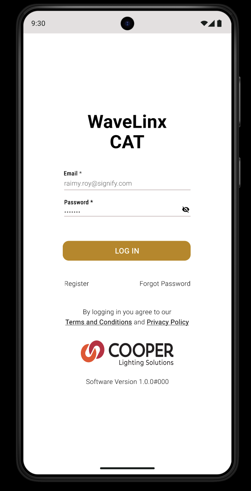
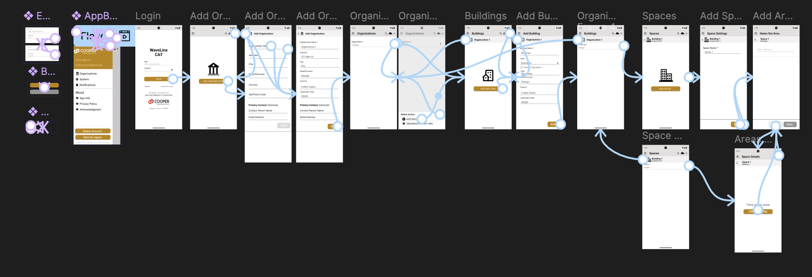

Cooper Lighting · Mobile SWE Intern
WaveLinx CAT App
As a Mobile SWE Intern at Cooper Lighting (Signify), I work on the WaveLinx CAT app. I wanted to take an extra step and recreate the Area Creation flow in Figma as close to the production app as possible — matching Cooper Lighting's brand system, colors, spacing, icon styles, and layout patterns to make it visually similar to the real platform.
View Prototype →
01
Skills Demonstrated
- Component Creation — Built reusable components for app bars, search fields, add forms, main menu items, list items, toggles, and buttons with auto-layout and variants
- Prototyping — Connected every screen and button with tap interactions, screen transitions, and back navigation to create a fully walkable flow
- Building Pages from Scratch — Recreated each screen pixel-by-pixel using only the live app as reference, no design files provided
- Following Brand Guidelines — Matched Cooper Lighting's brand colors, spacing, icon styles, and layout patterns throughout
02
Screens
Every screen in the Area Creation flow — from login through organization, building, space, and area setup — fully connected with interactive prototype wiring so each tap, transition, and back action mirrors the production experience.
